Langages réguliers
Alphabet et mots
On
considère un ensemble fini appelé
alphabet et noté
traditionnelement
\(\Sigma\). Ses
éléments sont appelés des
lettres ou des
symboles.
Un mot sur \(\Sigma\) est une suite
finie d’éléments de \(\Sigma\). On note
\(\epsilon\) le mot vide. Un mot non
vide \((a,b,c,\dots)\) sera juste noté
\(abc...\).
On note \(\Sigma^*\) l’ensemble des
mots.
Si \(\Sigma = \{ a, b, \dots, z \}\)
alors \(bonjour\) est un mot.
On utilisera souvent l’alphabet réduit à deux lettres : \(\{ a, b\}\). Il est particulièrement
important dans le contexte du binaire.
- On a donc \(\Sigma^* = \bigcup_{n \in \N}
\Sigma^n\) en posant \(\Sigma^0 = \{
\epsilon \}\).
- On note \(|u|\) la longueur du mot
\(u\). On a donc \(|\epsilon| = 0\).
On
définit une loi de composition \(.\)
interne appelée concaténation ainsi : \[
\forall x_1 \dots x_n, y_1 \dots y_m \in \Sigma^*,
x_1\dots x_n . y_1 \dots y_m = x_1 \dots x_n y_1 \dots y_m
\]
- \(\epsilon\) est le neutre de la
concaténation
- La concaténation est associative. On dit que \((\Sigma^*, .)\) est un
monoïde.
- On omet le plus souvent le symbole de la concaténation. Dans le
contexte où on mélange des mots et des lettres, cela revient à
identifier les lettres et les mots à une lettre qui leur sont associées.
Par exemple, si on écrit \(awb\) avec
\(a,b \in \Sigma\) et \(w \in \Sigma^*\).
- \(|uv| = |u| + |v|\).
- Si \(\Sigma = \{ \star \}\)
l’alphabet à une lettre, alors \((\Sigma^*,
.)\) est isomorphe à \((\N, +)\)
en tant que monoïde.
Conséquence directe de la définition de \(\Sigma^*\) :
Soient \(w, w' \in
\Sigma^*\).
\[
w = w' \iff \begin{cases}
|w| = |w'| = n \\
w = w_1 \dots w_n, w' = w'_1 \dots w'_n \text{ et } \forall
i \in \range{1}{n}, w_i = w'_i
\end{cases}
\]
Suffixe, Préfixe, facteurs,
sous-mots
Soit
\(u,v \in \Sigma^*\). On dit que
\(v\) est un
- suffixe de \(u\)
lorsqu’il existe \(w\in \Sigma^*\) tel
que \(u = w v\). Quand \(u, w \neq \epsilon\) on dit que \(v\) est un suffixe propre de \(u\).
- préfixe de \(u\)
lorsqu’il existe \(w\in \Sigma^*\) tel
que \(u = v w\). Quand \(u, w \neq \epsilon\) on dit que \(v\) est un préfixe propre de \(u\).
- facteur de \(u\)
lorsqu’il existe \(w,w' \in
\Sigma^*\) tels que \(u = w v
w'\). Quand \(u, w, w' \neq
\epsilon\), on dit que \(v\) est
un facteur propre de \(u\).
- sous-mot de \(u\)
lorsque \(v = u =\epsilon\), ou lorsque
\(u = x_1 \dots x_n \neq\epsilon\) où
\(x_1,\dots, x_n \in \Sigma\) et que
\(u = \epsilon\) ou qu’il existe \(\{i_1,\dots,i_k\} \subset \range{1}{n}\)
tels que \(v = x_{i_1} \dots x_{i_k}\).
Si on considère le mot \(triskaidekaphobia\),
- \(tri\) est un préfixe propre
- \(phobia\) est un suffixe
propre
- \(aide\) est un facteur propre
- \(trap\) est un sous-mot
Langage
Un
langage sur l’alphabet \(\Sigma\) est une partie de \(\Sigma^*\).
Sur l’aphabet \(\{a,b\}\), les
ensembles suivants sont des langages :
- les mots ne contenant que des \(a\)
: \(\enscomp{a^n}{n \in \N}\)
- les mots ayant le même nombre de \(a\) que de \(b\)
- les palindromes, c’est-à-dire les mots pouvant se lire de la même
manière de gauche à droite et de droite à gauche
Les langages peuvent être facile à définir mais dur à expliciter. Il
existe ainsi un langage contenant tous les énoncés que vous aurez aux
concours, mais ce sera difficile de le déterminer avant les épreuves
!
Soient
\(L, L'\) des langages sur un même
alphabet.
On note
- \(L+L' = L\cup L'\) le
langage union de ces langages.
- \(L L' = \enscomp{uv}{u \in L, v\in
L'}\) la concaténée de ces langages.
- \(L^n = L \dots L\) la concaténée
de \(n\) copies de \(L\) et \(L^0 = \{
\epsilon \}\).
- \(L^* = \bigcup_{n \in \N} L^n\)
appelée l’étoile de Kleene de \(L\).
\(L^*\) est clos par concaténation :
\(\forall w, w' \in L^*, ww' \in
L^*\).
Preuve
Soit \(w,
w' \in L^*\). Il existe \(n,
m\) tels que \(w = w_1 \dots w_n \in
L^n\) et \(w' = w'_1 \dots
w'_m \in L^m\), on a donc \(w
w' = w_1 \dots w_n w'_1 \dots w'_m \in L^{n+m} \subset
L^*\).
\(\emptyset^* = \{ \epsilon \}^* = \{
\epsilon \}\)
On peut démontrer de nombreuses relations sur les langages :
- \(\cup\) est associative,
commutative, idempotente et d’élément neutre \(\emptyset\).
- la concaténation est associative et d’élément neutre \(\{ \epsilon \}\) mais non commutative dès
que \(\Sigma\) contient au moins deux
lettres. Elle distribue sur l’union.
- L’étoile est déjà close, \((L^*)^* =
L^*\).
Preuve
On a naturellement \(L^* \subset (L^*)^*\). Soit \(w \in (L^*)^*\), il existe \(n \in \N\) et \(w_1, \dots, w_n \in L^*\) tels que \(w = w_1 \dots w_n\). Comme \(L^*\) est clos par concaténation, on a
\(w = w_1 \dots w_n \in L^*\). Ainsi,
on a l’égalité par double inclusion.
Langages réguliers
L’ensemble
\(\mathop{Reg}(\Sigma)\) des
langages réguliers sur
\(\Sigma\) est
défini inductivement ainsi :
- \(\emptyset \in
\mathop{Reg}(\Sigma)\)
- \(\forall a \in \Sigma, \{a\} \in
\mathop{Reg}(\Sigma)\)
- \(\forall A \in \mathop{Reg}(\Sigma), A^*
\in \mathop{Reg}(\Sigma)\)
- \(\forall A,B \in \mathop{Reg}(\Sigma),
A+B, AB \in \mathop{Reg}(\Sigma)\)
- Autrement dit, \(\mathop{Reg}(\Sigma)\) est le plus petit
ensemble contenant \(\emptyset\) est
les langages réduit à une lettre qui soit stable par concaténation,
union et étoile de Kleene.
- Les langages réguliers correspondent à la classe des langages
facilement reconnaissables, comme on le verra dans la partie suivante,
tout en étant suffisament expressifs.
Soit \(L\) le langage des mots sur
\(\{ a, b \}\) sans facteurs \(aa\) ou \(bb\).
Il s’agit donc des mots qui alternent les lettres.
\(L\) est régulier car on peut
l’écrire :
\[
L = (\{b\} + \{\epsilon\}) \{ab\}^*
(\{a\} + \{\epsilon\})
\] En effet, un tel mot est de quatre formes selon qu’il commence
ou pas un \(b\) et qu’il finisse ou pas
par un \(a\).
Expression régulière
On a pu voir dans le dernier exemple que la notation d’un langage
régulier à l’aide de la définition inductive est un peu lourde. Afin
d’améliorer cela, on va introduire une dénotation particulière des
langages réguliers : les expressions régulières.
Les
expressions régulières sur
\(\Sigma\)
sont des arbres d’expressions dont les feuilles sont étiquetées par
\(\{ \emptyset, \epsilon \} \cup
\Sigma\) et ayant des nœuds binaires étiquettés par
\(\{|, .\}\) et des nœuds unaires étiquettés
par
\(\{*\}\).
On adopte la notation infixe usuelle pour ces expressions en plaçant
\(*\) en opérateur unaire postfixe et
en omettant de noter \(.\).
Les expressions suivantes sont des expressions régulières sur \(\{a,b\}\) :
\[
a, b, ab, a|b, (a|b)a^*, \emptyset b
\]
On suppose que les opérateurs ont des précédences dans l’ordre \(* > . > |\) et ainsi, on pourra
omettre certaines parenthèses : \((a(b^*))|c =
ab^*|c\).
On
associe à toute expression régulière
\(e\) sur
\(\Sigma\) un langage
\(\mathop{lang}(e)\) :
- \(\mathop{lang}(\emptyset) =
\emptyset\)
- \(\mathop{lang}(\epsilon) = \{ \epsilon
\}\)
- \(\forall a \in \Sigma, \mathop{lang}(a) =
\{ a \}\).
- \(\mathop{lang}(e e') =
\mathop{lang}(e) \mathop{lang}(e')\)
- \(\mathop{lang}(e|e') =
\mathop{lang}(e) + \mathop{lang}(e')\)
- \(\mathop{lang}(e^*) =
\mathop{lang}(e)^*\)
On dit que \(e\) est une dénotation
du langage \(\mathop{lang}(e)\).
La définition calquant celle des langages réguliers, on a directement
le théorème suivant :
Les langages admettant une dénotation par une expression rationnelle
sont exactement les langages réguliers.
Un langage régulier n’admet pas une unique dénotation. Par exemple,
\(\{ a \}^*\) peut se noter \(a^*\) mais également \(aa^*|\epsilon\)
Afin de simplifier les expressions régulières, on est amené à
identifier deux expressions régulières dénotant un même langage. Ainsi,
on écrira directement \((a|b)c =
ac|bc\).
Expressions régulières étendues
POSIX
On distingue trois types d’expressions régulières dans les outils
Unix :
- les expressions simples acceptées par un shell
- les expresions régulières POSIX
- les expresions régulières POSIX étendues.
On présente ici les expressions étendues. Elles sont composées :
- de caractères, pour ceux qui sont utilisés dans les définitions
suivantes, on les échappe avec un
\ comme dans
\. ou \*
- de listes de caractères sous la forme
[abc] pour
représenter \(a|b|c\). On peut aussi
utiliser a-z pour indiquer tous les caractères de
a à z.
- de listes niées de la forme
[^...] où on considère tous
les caractères sauf ceux qui sont indiqués.
- le caractère
. représente n’importe quel
caractère.
- le caractère
^ est un caractère spécial représentant le
début d’une chaîne. De même, $ représente la fin.
- de parenthèses pour regrouper des sous-expressions
- des opérateurs
* et | comme dans la
définition des expressions régulières
On a également des ajouts pratiques :
+ et ? qui sont des sucres syntaxiques
pour les définitions suivantes : e+ = ee* et
e? = (e|). Il n’y a pas de \(\epsilon\), on se contente d’utiliser
l’expression vide comme ici.- pour \(m,n \in \N\) et
e une expression on peut écrire :
e{n} pour exactement \(n\) copies de ee{m,} pour au moins \(m\) copies de ee{,n} pour au plus \(n\) copies de ee{m,n} pour entre \(m\) et \(n\) copies de e
Il s’agit ici aussi de sucres. En effet, on pourrait écrire :
e{3} = eeee{3,} = eeee*e{,3} = (|e|ee|eee)e{3,2} = (ee|eee)
Automates finis
On va présenter ici un modèle de calcul permettant de reconnaitre des
langages réguliers.
Automates finis
déterministes
Un
automate fini déterministe est un quintuplet
\(A = (Q, \Sigma, \delta, q_i, F)\) où
- \(\Sigma\) est un alphabet
fini
- \(Q\) est un ensemble fini appelé
l’ensemble des états de l’automate
- \(q_i \in Q\) est appelé
l’état initial
- \(F \subset Q\) est appelé
l’ensemble des états finaux
- \(\delta\) est une application
partielle de \(Q \times \Sigma\) dans
\(Q\) est appelée la fonction
de transition de l’automate.
Une application partielle de \(E\)
dans \(F\) est une application \(E' \rightarrow F\) où \(E' \subset E\) est le domaine de
l’application.
Quand le domaine de \(\delta\) est
\(Q \times \Sigma\), on dit que
l’automate est complet.
Considérons l’automate fini \(A =
(\{q_0,q_1,q_2,q_3\}, \{a,b\}, \delta, q_0, \{ q_3 \})\) où :
\[\delta(q_0,a) = q_1, \delta(q_0, b) =
q_2\] \[\delta(q_1,a) = q_1,
\delta(q_1, b) = q_3\] \[\delta(q_2,a)
= q_3, \delta(q_2, b) = q_3\]
On peut représenter \(\delta\) sous
forme tabulaire, on parle alors de table de transition.
L’état initial est indiqué par une flèche et les états finaux par une
astérisque.
\[
\begin{array}{rc|cc}
& & a & b \\
\rightarrow & q_0 & q_1 & q_2 \\
& q_1 & q_1 & q_3 \\
& q_2 & q_3 & q_2 \\
* & q_3
\end{array}
\]
On adopte une notation graphique pour présenter les automates. Les
états sont des nœuds et les arêtes permettent de représenter \(\delta\). Les états finaux sont indiqués
par une flèche sortante ou un double trait comme ici :
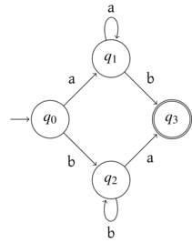
Accessibilité,
Co-accessibilité
On peut préciser la notation précédente d’un automate sous la forme
d’un graphe. Comme on peut avoir deux transitions \(\delta(q,a) = \delta(q,b) = q'\) avec
\(a \neq b\) ainsi que des boucles, le
graphe n’est pas simple et parler d’ensemble de couples de sommets pour
les arêtes ne suffit plus.
Soit
\(A = (Q, \Sigma, \delta, q_i, F)\) un
automate fini.
On pose \(E_A \subset Q \times \Sigma
\times Q\) défini par \((q,a,q')
\in E_A \iff \delta(q,a) = q'\).
Le couple \(G_A = (Q, E_A)\) est le
graphe, dont les arêtes sont étiquettées, associé à l’automate \(A\).
Grâce à ce graphe, on peut utiliser des notions de chemins entre
états :
Soit
\(A = (Q, \Sigma, \delta, q_i, F)\) un
automate fini et
\(q \in Q\).
On dit que \(q\) est
- accessible lorsque \(q_i
\leadsto q\).
- co-accessible lorsqu’il existe \(q_f\in F\) tel que \(q \leadsto q_f\).
Quand tous les états d’un automate sont accessibles et
co-accessibles, on dit que l’automate est émondé.
Langage reconnu par un automate
fini
Soit
\(A = (Q, \Sigma, \delta, q_i, F)\) un
automate fini.
On dit que \(m \in \Sigma^*\) est
reconnu par \(A\) si
c’est l’étiquette d’un chemin de \(q_i\) à un état final.
On appelle langage reconnu par l’automate l’ensemble
des mots reconnaissables, on le note \(\mathop{lang}(A)\).
On reprend l’exemple précédent d’automates. Pour qu’il reconnaisse un
mot, on voit que celui-ci doit être soit de la forme \(a^nb\) soit de la forme \(b^na\) avec \(n
> 0\).
On peut décrire précisément ce langage par l’expression régulière
\(aa^*b | bb^*a\).
Étant donné un automate fini, il est possible d’en déduire un
automate complet et un automate émondé ayant tous les trois le même
langage reconnu.
Preuve
Seuls les états accessibles et
co-accessibles peuvent apparaitre dans un chemin de l’état initial à un
état final, ainsi, les autres états n’ont aucune influence sur le
langage reconnu.
Pour rendre un automate complet, il suffit de rajouter un état
supplémentaire, communément appelé état puits, \(q_p\) et de poser : \(A' = (Q \cup \{ q_p \}, \Sigma, \delta',
q_i, F)\) avec pour \(q \in Q\cup
{q_p}\) et \(a \in \Sigma\),
\(\delta'(q,a) = \delta(q,a)\) si
la transition était définie et \(\delta'(q,a) = q_p\) sinon.
Pour émonder un automate, il suffit juste de supprimer tous les états
qui ne sont pas accessibles ou pas co-accessibles.
Fonction de transition
étendue
Il est souvent utile de raisonner directement sur des mots pour
effectuer plusieurs transitions d’affilée. On introduit alors la notion
suivante :
Soit
\(A = (Q, \Sigma, \delta, q_i, F)\) un
automate fini déterministe, on définit sa fonction de transition
étendue \(\delta^* : Q \times
\Sigma^* \rightarrow Q\) par récurrence sur la longueur des mots
ainsi : \[
\forall q \in Q, \delta^*(q,\epsilon) = q
\] \[
\forall w \in \Sigma^*, \forall a \in \Sigma,
\delta^*(q,wa) = \delta(\delta^*(q,w),a)
\]
On a ainsi \[
\mathop{lang}(A) = \enscomp{w \in \Sigma^*}{\delta^*(q_i,w) \in F}
\]
Modélisation par des
automates
On vient de voir que les automates finis permettent de caractériser
certains langages, mais ils permettent également de modéliser des
systèmes à plusieurs états.
On considère un distributeur de boissons qui permet de distribuer des
expressos ou des cafés longs. Un expresso coute 1€ et un long coute 2€.
On considère qu’on peut mettre des pièces de 50c, 1€ ou 2€. On souhaite
modéliser l’échange amenant à valider la quantité d’argent inséré. On
suppose que la boisson qui sera distribuée est stockée ailleurs que dans
un état, donc un état final signifiera uniquement que le bon montant a
été inséré.
On ignore également toutes les pièces dépassant le montant dû, on
pourrait ainsi rajouter des boucles sur les états avec ces valeurs. On
les omet dans le dessin suivant pour être plus lisible :
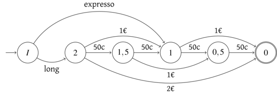
Les mots reconnus sont alors :
- long-2€
- long-1€-1€
- long-1€-50c-50c
- long-50c-1€-50c
- long-50c-50c-1€
- long-50c-50c-50c-50c
- expresso-1€
- expresso-50c-50c
Ce qui correspond exactement au comportement souhaité.
On a parlé de mots, mais on parle en général de traces
d’exécution qui permettent de s’assurer que le comportement est
celui que l’on souhaite.
Automates non
déterministes
On va modifier la définition afin de donner plus de souplesse et donc
a priori plus de pouvoir expressif aux automates.
Un
automate fini non déterministe est un quintuplet
\(A = (Q, \Sigma, \delta, q_i, F)\) où
- \(\Sigma\) est un alphabet
fini
- \(Q\) est un ensemble fini appelé
l’ensemble des états de l’automate
- \(I \subset Q\) est appelé
l’ensemble des **états initiaux*
- \(F \subset Q\) est appelé
l’ensemble des états finaux
- \(\delta : Q \times \Sigma \rightarrow
\mathcal{P}(Q)\) est appelée la fonction de
transition de l’automate.
Dans cette définition, les seuls changements par rapport aux
automates déterministes sont la présence de plusieurs états initiaux et
le fait qu’on ait des transitions vers \(0,1\) ou plus d’états.
Si \(\delta(q,a) = \emptyset\) c’est
équivalent à ne pas avoir défini la transition dans l’application
partielle d’un automate déterministe. La nouveauté est donc dans le fait
d’avoir plusieurs états.
On représente naturellement ces automates de manière en rajoutant des
flèches étiquetées par \(a\) depuis un
état \(q\) vers chaque état de \(\delta(q,a)\).
On définit de même la fonction de transition étendue d’un automate
non-déterministe.
Soit
\(A = (Q, \Sigma, \delta, I, F)\) un
automate fini non déterministe, on définit sa fonction de
transition étendue \(\delta^* : Q
\times \Sigma^* \rightarrow \mathcal{P}(Q)\) par récurrence sur
la longueur des mots ainsi : \[
\forall q \in Q, \delta^*(q,\epsilon) = \{q\}
\] \[
\forall w \in \Sigma^*, \forall a \in \Sigma,
\delta^*(q,wa) = \bigcup_{q' \in \delta^*(q,w)} \delta(q',a)
\]
Soit
\(A = (Q, \Sigma, \delta, q_i, F)\) un
automate fini non-déterministe, on appelle langage reconnu par
\(A\) l’ensemble \[
\mathop{lang}(A) = \bigcup_{q_i \in I}
\enscomp{w \in \Sigma^*}{\delta^*(q_i,w) \cap F \neq \emptyset}
\]
L’automate non-déterministe suivant reconnait les mots dont
l’avant-dernière lettre est un a.
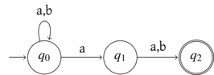
On voit qu’il y a un choix non-déterministe ici qui permet de deviner
la fin d’un mot.
Soit \(A\) un automate fini
non-déterministe, il existe un automate fini déterministe \(A'\) reconnaissant le même langage que
\(A\).
De plus, si \(A\) contient \(n\) états, alors \(A'\) contient au plus \(2^n\) états.
Preuve
On va, en fait, présenter une
méthode permettant de
déterminiser un automate fini.
Cette construction est appelée
l’automates des
parties.
Si \(A = (Q, \Sigma, \delta, I, F)\)
on pose \(A' = (\mathcal{P}(Q), \Sigma,
\delta', I, F')\) où \[
F' = \enscomp{p \subset Q}{p \cap F \neq \emptyset}
\] et, pour \(p \subset Q\) et
\(a \in \Sigma\), \[
\delta'(p,a) = \bigcup_{q \in p} \delta(q,a)
\] On peut émonder l’automate pour diminuer son nombre d’état,
mais on voit tout de suite qu’il en contient au plus \(2^{|Q|}\).
Pour conclure, on doit montrer que \(\mathop{lang}(A) = \mathop{lang}(A')\).
Pour cela, on va montrer le résultat suivant par récurrence sur \(|w|\) : \[
\forall w \in \Sigma^*, \bigcup_{q_i \in I} \delta^*(q_i,w) =
\delta'^*(I,w)
\]
Initialisation : \(\bigcup_{q_i \in I} \delta^*(q_i,\epsilon) =
\bigcup_{q_i \in I} \{ q_i \} = I =
\delta'^*(I,\epsilon)\)
Hérédité : si la propriété est vraie pour des mots de
longueurs \(n\), soit \(wa \in \Sigma^*\) où \(a \in \Sigma\) avec \(|w|=n\).
On a \[
\begin{array}{rcl}
\bigcup_{q_i \in I} \delta^*(q_i,wa) & = &\bigcup_{q_i \in I}
\bigcup_{q \in \delta^*(q_i,w)} \delta(q,a)
\\ & = &\bigcup_{q \in \bigcup_{q_i \in I} \delta^*(q_i,w)}
\delta(q,a)
\\ & = &\bigcup_{q \in \delta'^*(I,w)} \delta(q,a)
\\ & = & \delta'(\delta'^*(I,w),a) \\ & = &
\delta'^*(I,wa)
\end{array}
\]
Ainsi, on a l’égalité voulue et donc \[
\begin{array}{rcl}
\mathop{lang}(A) & = & \bigcup_{q_i \in I} \enscomp{w \in
\Sigma^*}{\delta^*(q_i,w) \cap F \neq
\emptyset} \\
& = & \enscomp{w \in \Sigma^*}{\bigcup_{q_i \in I}
\delta^*(q_i,w) \cap F \neq
\emptyset} \\
& = & \enscomp{w \in \Sigma^*}{\delta'^*(I,w) \cap F \neq
\emptyset} \\
& = & \enscomp{w \in \Sigma^*}{\delta'^*(I,w) \in
F'} \\
& = & \mathop{lang}(A')
\end{array}
\]
Pour réaliser ce procédé de détermination en pratique, on établit une
table de transition en partant de \(I\)
et en rajoutant une ligne pour chaque nouvel état rencontré. Se faisant,
on obtient un automate partiellement émondé.
Si on reprend l’exemple précédent, on va définir la table suivante
:
\[
\begin{array}{rc|cc}
& & a & b \\
\rightarrow & \{ q_0 \} & \{ q_0, q_1 \} & \{q_0\} \\
& \{ q_0,q_1 \} & \{ q_0, q_1, q_2 \} & \{q_0, q_2\} \\
*& \{ q_0,q_1,q_2 \}
& \{ q_0,q_1, q_2 \} & \{q_0,q_2\} \\
*& \{ q_0,q_2 \}
& \{ q_0,q_1, q_2 \} & \{q_0\}
\end{array}
\]
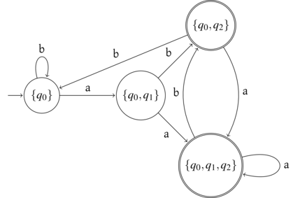
On remarque avec cette construction qu’on a deux états acceptants qui
correspondent aux suffixes ab et aa.
On admet facilement qu’il est possible de déduire un automate
non-déterministe d’un automate déterministe en posant \(\delta'(q,a) = \{ \delta(q,a) \}\) et
on a alors le corollaire :
Les langages reconnus par des automates déterministes sont exactement
les langages reconnus par des automates non-déterministes.
Transitions spontanées
On peut également étendre les automates non-déterministes en
rajoutant des transitions spontanées, également appelées \(\epsilon\)-transition, entre les états en
considérant une fonction de transition prenant également le mot de vide
en entrée. Comme on va le voir, cela permet de n’avoir qu’un seul état
initial.
Un
automate fini non-déterministe à transitions spontanées
est un quintuplet
\(A = (Q, \Sigma, \delta,
q_i, F)\) où
- \(\Sigma\) est un alphabet
fini
- \(Q\) est un ensemble fini appelé
l’ensemble des états de l’automate
- \(q_i \in Q\) est appelé **l’état
initial*
- \(F \subset Q\) est appelé
l’ensemble des états finaux
- \(\delta : Q \times (\Sigma \cup \{
\epsilon \}) \rightarrow \mathcal{P}(Q)\) est appelée la
fonction de transition.
L’automate suivant présente des transitions spontanées indiquées par
\(\epsilon\) :
Soit
\(A\) un automate fini non-déterministe
possédant des transitions spontanées et
\(q
\in Q\). On définit l’ensemble
\(\overline{q}\) définit par induction ainsi
:
\(q \in \overline{q}\) et
\[
\forall q'\in \overline{q}, \delta(q',\epsilon) \subset
\overline{q}
\]
Si \(E \subset Q\), on pose \(\overline{E} =\enscomp{\overline{q}}{q \in
E}\).
\(\overline{q}\) est donc l’ensemble
des états accessibles dans le sous-graphe des états obtenus en ne
conservant que les transitions spontanées.
Cette complétion est nécessaire pour comprendre l’action de
l’automate sur les états dans la mesure où \(q' \in \delta(q,a)\) signifie qu’on
peut également accéder aux états accessibles depuis \(q'\) par transition spontanée.
On remarque qu’on a \(\overline{E \cup F} =
\overline{E} \cup \overline{F}\).
Dans \(A''\) on a \(\overline{\{q_i\}} = \{q_i,q_0,q_4\}\).
On peut alors définir la fonction de transition étendue d’un tel
automate ainsi : \[\forall q \in Q,
\delta^*(q,\epsilon) = \overline{q}\] \[\forall w \in \Sigma^*, \forall a \in \Sigma,
\delta^*(q,wa) = \overline{ \bigcup_{q' \in \delta^*(q,w)}
\delta(q',a)}\] et on définit alors le langage reconnu par un
tel automate ainsi : \[
\mathop{lang}(A) = \enscomp{w \in \Sigma^*}{\delta^*(q_i,w) \cap F \neq
\emptyset}
\]
Soit \(A\) un automate fini
non-déterministe possédant des transitions spontanées. Il existe un
automate non-déterministe \(A'\)
tel que \(\mathop{lang}(A) =
\mathop{lang}(A')\).
Preuve
On pose
\(A' = (Q, \Sigma, \delta', \overline{q_i},
F)\) où
\[
\delta'(q,a) = \overline{\delta(q,a)}
\]
On va montrer par récurrence sur \(|w|\) que \[
\forall w \in \Sigma^*, \delta^*(q_i, w) =
\bigcup_{q \in \overline{q_i}} \delta'^*(q,w)
\]
- Initialisation \(\delta^*(q_i,\epsilon) = \overline{q_i} =
\bigcup_{q \in \overline{q_i}} \{q \} = \bigcup_{q \in \overline{q_i}}
\delta'^*(q, \epsilon)\)
- Hérédité supposons la propriété vraie pour les mots de
longueurs \(n\) et soit \(wa \in \Sigma^*\) où \(|w|=n\) et \(a
\in \Sigma\). On a \[\begin{array}{rcl} \delta^*(q_i, wa) & =
&
\overline{\bigcup_{q' \in \delta^*(q_i,w)} \delta(q',a)} \\
& = & \bigcup_{q' \in \delta^*(q_i,w)}
\overline{\delta(q',a)} \\
& = & \bigcup_{q' \in \bigcup_{q \in \overline{q_i}}
\delta'^*(q,w)} \delta'(q',a) \\
& = & \bigcup_{q \in \overline{q_i}} \bigcup_{q'
\in \delta'^*(q,w)} \delta'(q',a) \\
& = & \bigcup_{q \in \overline{q_i}} \delta'^*(q, wa)
\end{array}\]
On peut alors conclure sur les langages reconnus : \[
\begin{array}{rcl}
\mathop{lang}(A) &=& \enscomp{w \in \Sigma^*}{\delta^*(q_i,w)
\cap F \neq \emptyset}\\
& = & \enscomp{w \in \Sigma^*}{\bigcup_{q \in \overline{q_i}}
\delta^*(q,w)
\cap F \neq \emptyset} \\
& = & \bigcup_{q \in \overline{q_i}} \enscomp{w \in
\Sigma^*}{\delta^*(q,w)
\cap F \neq \emptyset} \\
& = & \mathop{lang}(A')
\end{array}
\]
On va éliminer les transitions spontanées de l’automate précédemment
donné en exemple. Pour cela, on peut commencer par établir une table
complétée :
\[
\begin{array}{cccc}
q & c & \delta(q,c) & \overline{\delta(q,c)} \\
\hline
q_0 & a & \{ q_1 \} & \{ q_0, q_1, q_2, q_4 \} \\
q_1 & a & \{ q_1 \} & \{ q_0, q_1, q_2, q_3, q_4 \} \\
q_1 & b & \{ q_1 \} & \{ q_0, q_1, q_2, q_3, q_4 \} \\
q_3 & b & \{ q_4 \} & \{ q_4 \} \\
q_4 & a & \{ q_2 \} & \{ q_0, q_2, q_3 \} \\
\end{array}
\] Les états initiaux sont \(\{q_0,q_3\}\) et les états finaux sont
\(\{q_1, q_2\}\).
On a donc l’automate non-déterministe équivalent suivant :
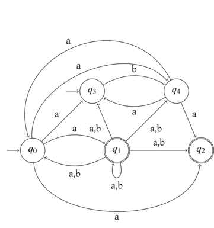
On remarque donc que cette élimination des transitions spontanées ne
change pas les sommets mais uniquement les arêtes du graphe associé à
l’automate en en rajoutant par complétion.
Pour passer d’un automate non déterministe à un automate non
déterministe à transitions spontanées, il suffit de rajouter un nouvel
état initial et des transitions spontanées vers les anciens états
initiaux.
On a donc également le corollaire suivant en composant les théorèmes
précédents.
Les langages reconnus par un automate fini non-déterministe possédant
des transitions spontanées sont exactement les langages reconnus par un
automate fini déterministe.
En fait, il est possible de déterminiser directement un automate avec
transition spontanées.
On va déterminiser l’automate présenté au dessus en utilisant
là-aussi la méthode la table de transition construite à la volée. Il
faut juste bien faire attention à prendre la complétion des états
obtenus. Afin de simplifier la représentation, on a attribué une lettre
aux états.
\[
\begin{array}{rcc|cc}
& & & a & b \\
\rightarrow & A & \{ q_0, q_3 \} & \{ q_0, q_1, q_2, q_3,
q_4 \}
& \{ q_4 \} \\
* & B & \{ q_0, q_1, q_2, q_3, q_4 \} &
\{q_0,q_1,q_2,q_3,q_4 \}
& \{q_0,q_1,q_2,q_3,q_4 \} \\
& C & \{ q_4\} & \{q_0,q_2,q_3\} & \\
* & D & \{q_0,q_2,q_3\} & \{q_0,q_1,q_2, q_3 , q_4 \} &
\{ q_4 \}
\end{array}
\] Cet automate peut se représenter graphiquement ainsi :
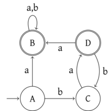
Théorème de Kleene
Dans cette partie, on va démontrer le théorème de Kleene :
(Kleene) Les langages réguliers sont exactement les
langages reconnaissables par un automate fini déterministe.
La preuve de ce théorème est suffisamment complexe pour qu’on la
sépare en deux résultats. On va montrer ici comment passer d’une
expression régulière à un automate, et réciproquement. Dans les deux
sens, on dispose de constructions inefficaces, faciles à comprendre, et
d’algorithmes efficaces mais plus délicats.
Des expressions régulières aux
automates non-déterministes avec transitions spontanées
On commence ici par montrer une construction très simple d’un
automate non-déterministe à transitions spontanées associé à une
expression régulière par induction sur l’expression.
On note \(A(e)\) l’automate de
Thompson associé à l’expression \(e\),
il va s’agir dans tous les cas d’un automate à un état initial et un
état final. Un tel automate aura donc la forme suivante :
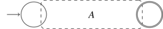
On peut alors passer à un automate déterministe avec la méthode de
l’automate des parties.
On considère l’expression régulière \((a|b)^*b(a|b)\).
L’automate de Thompson associé est donc :
Si on retire les transitions spontanées, on obtient l’automate :
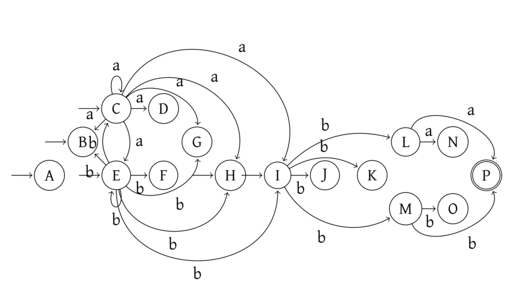
qui en émondant les états qui ne sont pas accessibles ou pas
co-accessibles devient :
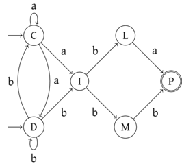
Notons qu’il est possible d’obtenir directement un automate
comportant moins d’états :
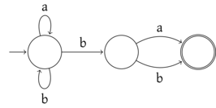
On peut démontrer le résultat suivant :
Pour toute expression régulière \(e\), on a \(\mathop{lang}(e)
=\mathop{lang}(L(e))\).
Calcul d’une expression
régulière depuis un automate - McNaughton et Yamada
Soit \(A\) un automate fini
déterministe, il existe un expression régulière \(e\) telle que \(\mathop{lang}(A) = \mathop{lang}(e)\).
On va s’inspirer de Floyd-Warshall pour définir de manière
incrémentale des expressions régulières.
Preuve
On pose
\(A = (\range{1}{n}, \Sigma, \delta, 1, F)\)
en numérotant les états de
\(A\) et en
supposant que l’état initial a le numéro 1. On va construire une suite
de matrice d’expression régulière
\((R^{(k)})_{k \in \range{0}{n}}\) telle que
\(\forall i, j \in \range{1}{n},
R^{(k)}_{i,j}\) soit une expression régulière reconnaissant
toutes les étiquettes de chemins de l’état
\(i\) à l’état
\(j\) et dont les états intermédiaires sont
\(\le k\).
On va construire les \(R^{(k)}\) par
récurrence.
Initialisation : pour \(k
= 0\), il s’agit des transitions de l’automates. On va noter ici
\(\alpha(i,j) = \enscomp{ a \in \Sigma }{
\delta(i,a) = j }\). On pose donc, pour \(i \neq j\), \[
R^{(0)}_{ij} = \begin{cases} \emptyset & \text{si } \alpha(i,j) =
\emptyset \\
a_1 | a_2 | \dots | a_p & \text{si } \alpha(i,j)= \{ a_1, \dots, a_p
\}
\end{cases}
\] Quand \(i = j\), il faut
également considérer le chemin vide de \(i\) vers \(i\) qui est d’étiquette \(\epsilon\), on a donc : \[
R^{(0)}_{ii} = \begin{cases} \epsilon & \text{si } \alpha(i,i) =
\emptyset \\
\epsilon | a_1 | a_2 | \dots | a_p & \text{si } \alpha(i,i)= \{ a_1,
\dots, a_p \}
\end{cases}
\]
Hérédité : supposons qu’on ait construit les \(R^{(l)}\) pour \(0 \le l < k\). Un chemin de \(i\) à \(j\) dont les états intermédiaires sont
\(\le k\) est de deux sortes :
- Soit c’est un chemin dont les états intermédiaires sont \(< k\), donc sont étiquettes est denotée
par \(R^{(k-1)}_{ij}\).
- Soit, il passe par l’état \(k\) au
moins une fois, et il a donc la forme : \[
i \xrightarrow{\phi} k \xrightarrow{\psi_1} k \rightarrow \dots
\rightarrow k \xrightarrow{\psi_p} k \xrightarrow{\tau} j
\] avec \(p \in \N\) qui
correspond au nombre de fois où on revient sur l’état \(k\) dans le chemin. L’étiquette de \(\phi\) est dénotée par \(R^{(k-1)}_{ik}\), les étiquettes des \(\psi_l\) sont dénotées par \(R^{(k-1)}_{kk}\) et l’étiquette de \(\tau\) par \(R^{(k-1)}_{kj}\). Ainsi, le chemin global a
une étiquette dénotée par \[
R^{(k-1)}_{ik} \left(R^{(k-1)}_{kk}\right)^* R^{(k-1)}_{kj}
\]
Ainsi, on pose \[
R^{(k)}_{ij} = R^{(k-1)}_{ij} | R^{(k-1)}_{ik}
\left(R^{(k-1)}_{kk}\right)^* R^{(k-1)}_{kj}
\]
On déduit de cette construction la matrice \(R^{(n)}\) et on peut donc poser \[
e = R^{(n)}_{1f_1} | \dots | R^{(n)}_{1f_p}
\] où \(F = \{ f_1, \dots, f_p
\}\).
On considère l’automate :
En numérotant dans l’ordre alphabétique \(1
= A, 2 = B, 3 = C\) et \(4 =
D\). On a, en ignorant les \(\emptyset\) et en simplifiant, les matrices
suivantes :
\[
R^{(0)} = R^{(1)} = \begin{pmatrix}
\epsilon & a & b & \emptyset \\
\emptyset & \epsilon|a|b & \emptyset & \emptyset \\
\emptyset & \emptyset & \epsilon & a \\
\emptyset & a & b & \epsilon
\end{pmatrix}
\] \[
R^{(2)} = \begin{pmatrix}
\epsilon & a | a(\epsilon|a|b)^* & b & \emptyset \\
\emptyset & \epsilon|a|b | (\epsilon|a|b)^* & \emptyset &
\emptyset \\
\emptyset & \emptyset & \epsilon & a \\
\emptyset & a | a(\epsilon|a|b)^* & b & \epsilon
\end{pmatrix}
= \begin{pmatrix}
\epsilon & a(a|b)^* & b & \emptyset \\
\emptyset & (a|b)^* & \emptyset & \emptyset \\
\emptyset & \emptyset & \epsilon & a \\
\emptyset & a(a|b)^* & b & \epsilon
\end{pmatrix}
\] \[
R^{(3)}= \begin{pmatrix}
\epsilon & a(a|b)^* & b & ba \\
\emptyset & (a|b)^* & \emptyset & \emptyset \\
\emptyset & \emptyset & \epsilon & a \\
\emptyset & a(a|b)^* & b & \epsilon | b \epsilon^* a
\end{pmatrix} =
\begin{pmatrix}
\epsilon & a(a|b)^* & b & ba \\
\emptyset & (a|b)^* & \emptyset & \emptyset \\
\emptyset & \emptyset & \epsilon & a \\
\emptyset & a(a|b)^* & b & \epsilon | ba
\end{pmatrix}
\] \[
\begin{array}{rcl}
R^{(4)} &= & \begin{pmatrix}
\epsilon & a(a|b)^* | ba (ba)^* a (a|b)^* & b & ba |
ba(ba)^* \\
\emptyset & (a|b)^* & \emptyset & \emptyset \\
\emptyset & \emptyset & \epsilon | a (ba)^* b & a | a(ba)^*
\epsilon \\
\emptyset & a(a|b)^* & b | \epsilon(ba)^*b & \epsilon | ba |
(\epsilon | ba)(ba)^* (\epsilon|ba)
\end{pmatrix} \\
& = &
\begin{pmatrix}
\epsilon & (ba)^* a (a|b)^* & b & ba(ba)^* \\
\emptyset & (a|b)^* & \emptyset & \emptyset \\
\emptyset & \emptyset & \epsilon | a (ba)^* b & a(ba)^* \\
\emptyset & a(a|b)^* & (ba)^*b & (ba)^*
\end{pmatrix}
\end{array}
\] On en déduit donc l’expression régulière associée à l’automate
de départ : \[
(ba)^* a (a|b)^* | ba(ba)^*
= (ba)^* (a (a|b)^* | ba)
\]
On peut voir dans l’exemple précédent que la détermination de cette
expression régulière est laborieuse car l’algorithme sous-jacent rajoute
4 symboles dans l’expression : un \(|\), deux concaténations et une \(*\). On a donc des expression dans la
matrice finale qui sont de taille \(O(4^n)\) sans simplifications. On va voir
une autre méthode permettant de déterminer de manière plus efficace des
expressions régulières.
Élimination des états -
Brzozowski et McCluskey
On présente ici le principe de l’élimination des états. Il s’agit de
construire un automate dont les transitions ne sont plus étiquetées par
des lettres mais par des expressions régulières. Cette souplesse permet
de supprimer des états en gardant le même langage reconnu. On procéde
donc, étant donné un état final donné \(q\), par élimination jusqu’à obtenir un
automate dont les états sont \(\{ q_i,
q\}\) où \(q_i\) est l’état
initial. On en déduit simplement une expression régulière équivalente.
On conclut alors en faisant cela pour chaque état final et en prenant
l’union des expressions régulières.
On reprend l’automate précédent :
On commence par retirer les états qui ne sont ni initiaux ni finaux,
ce qui permet de repartir de l’automate obtenu pour tous les états
finaux. Ici, seul l’état \(C\) est dans
ce cas.
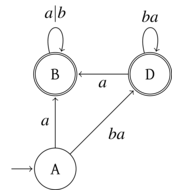
En considérant l’état final \(D\),
comme aucun chemin de \(A\) à \(D\) ne passe par l’état \(B\), on peut l’eliminer directement pour
obtenir l’automate à deux états final :
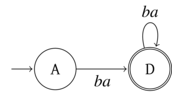
On en déduit directement l’expression régulière \(ba(ba)^*\).
Maintenant, on va considérer l’état final \(B\) et on souhaite éliminer \(D\). On doit prendre en compte le chemin
qui va de \(A\) à \(B\) en passant par \(D\), sachant qu’il y a une boucle
potentielle sur \(D\) qu’on peut
prendre un nombre quelconque de fois. On obtient alors l’automate :
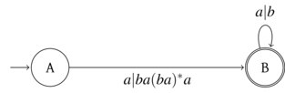
Qui admet \((a |ba (ba)^* a)(a|b)^* =
(ba)^* a (a|b)^*\) comme expression régulière.
Au final, on obtient l’expression régulière : \[
(ba)^* a (a|b)^* | ba(ba)^* = (ba)^* (a (a|b)^* | ba)
\] On retrouve donc l’expression régulière obtenue avec la
méthode précédente.
Quitte à rajouter des transitions spontanées, on peut se ramener à
n’avoir qu’un unique état final et donc à ne faire qu’une seule suite
d’élimination.
L’automate précédent avec ce nouvel état devient :
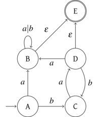
On note que \(\epsilon\) ici désigne
une expression régulière, on n’a donc pas à sortir du cadre
précédent.
On peut alors éliminer les sommets \(B,
C\) et \(D\) :
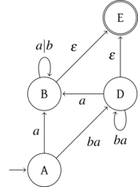
On élimine alors \(D\) :
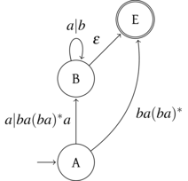
Puis en éliminant \(B\) :
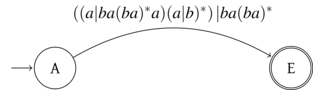
On retrouve ainsi l’expression régulière précédente après
simplification.
On remarque que cette méthode n’est pas forcément plus pratique à la
main sur des petits automates et qu’on risque de faire apparaitre de
longues expressions régulières et de faire des erreurs de calcul.
On va formaliser l’élimination. Si un état \(s\) a des prédecesseurs \(p_1, \dots, p_n\) et des successeurs \(q_1, \dots, q_m\), certains peuvent être
successeurs et prédecesseurs, on a la situation locale en \(s\) suivante :
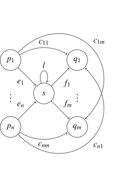
Pour passer de \(p_i\) à \(q_j\) on a donc soit l’expression déjà
présente \(c_{ij}\), soit on effectue
un chemin en passant par \(s\) donc de
la forme \[p_i \rightarrow s \rightarrow s
\rightarrow \dots \rightarrow s
\rightarrow q_j\] ce qui correspond à l’expression régulière
\(e_i l^* f_j\). On peut donc en
déduire l’automate suivant avec \(s\)
éliminé :
Après élimination de tous les états sauf l’état initial et un état
final, on obtient un automate de la forme :
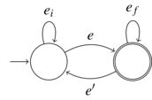
On lui associe alors l’expression régulière \[
(e_i | e e_f^* e')^* e e_f^*
\]
Construction de l’automate de
Glushkov, algorithme de Berry-Sethi
On présente ici une construction directe d’un automate non
déterministe reconnaissant le même langage q’une expression régulière
donnée. La construction qu’on présente ici s’effectue en plusieurs temps
:
- définition et reconnaissance des langages locaux par les automates
déterministes locaux
- définition d’une expression régulière linéaire et localité de son
langage dénoté
- obtention d’un automate non déterministe par linéarisation d’une
expression régulière puis oubli du marquage de lettres
Langages locaux
Soit
\(\Sigma\) un alphabet fini et
\(L \subset \Sigma^*\) un langage.
On dit que \(L\) est
local lorsqu’il existe \(P, S
\subset \Sigma\) et \(N \subset
\Sigma^2\) tels que les mots non vides de \(L\) sont exactement les mots qui
- commencent par une lettre de \(P\)
- finissent par une lettre de \(S\)
- ne contiennent aucun facteur dans \(N\)
Autrement dit, \(L\) vérifie
l’égalité : \[
L \backslash \{ \epsilon \}
= (P \Sigma^* \cap \Sigma^* S) \backslash \Sigma^* N \Sigma^*
\]
Pour savoir si un mot est dans un langage local, il suffit donc
d’avancer avec une fenêtre de lecture de deux caractères, c’est en ce
sens qu’il est local.
Si on sait qu’un langage est local, il est facile déterminer les
ensembles \(P, S\) et \(N\).
Soit \(L\) un langage local et avec
les notations de la définition, on a
\[
\begin{array}{rcl}
P &=& \enscomp{ a \in \Sigma }{ \exists, w \in \Sigma^*, a w \in
L } \\
S &=& \enscomp{ a \in \Sigma }{ \exists, w \in \Sigma^*, w a \in
L } \\
N &=& \enscomp{ ab \in \Sigma^2 }{ \forall w\in L, ab \text{
n'est pas un facteur de } w }
\end{array}
\]
- \(\Sigma^*\) est local avec \(P = S =\Sigma\) et \(N = \emptyset\).
- \(L = a(aa)*b\) n’est pas local car
on aurait alors \(P = \{ a\}\), \(S= \{b\}\) et \(N
= \{b a, bb \}\). or, \((P \Sigma^*
\cap \Sigma^* S) \backslash \Sigma^* N \Sigma^*\) contient les
mots de la forme \(a^n b\) avec \(n \in \N^*\) et donc contient \(aab\) qui n’est pas dans \(L\), car les mots de \(L\) contiennent un nombre impair de \(a\).
Automates locaux
Soit
\(A = (Q, \Sigma, \delta, q_i, F)\) un
automate fini déterministe.
On dit que \(A\) est
- local lorsque \(\forall a
\in \Sigma, \left| \enscomp{\delta(q,a)}{q \in Q} \right| \le
1\)
- standard lorsque \(\forall a \in \Sigma, \forall q \in Q,\delta(q,a)
\neq q_i\).
Ainsi, un automate est local si la lecture d’une lettre ne peut pas
amener sur deux états différents et standard quand on ne peut pas
revenir sur l’état initial.
Soit \(L\) un langage les propriétés
suivantes sont équivalentes :
- \(L\) est local
- \(L\) est reconnaissable par un
automate déterministe local
- \(L\) est reconnaissable par un
automate déterministe local et standard
Preuve
On a directement
\(3 \Rightarrow 2\). On va montrer deux
autres implications pour avoir l’équivalence.
\(\underline{1 \Rightarrow 3}\) Soit
\(L\) un langage local et \(S,P, N\) tels que \[
L \backslash \{ \epsilon \}
= (P \Sigma^* \cap \Sigma^* S) \backslash \Sigma^* N \Sigma^*
\] On définit \(A = (\Sigma \cup \{
\epsilon \}, \Sigma, \delta, \epsilon, S')\) où \(S' =\begin{cases} S & \text{si } \epsilon
\not\in L \\ S \cup \{\epsilon\}& \text{sinon} \end{cases}\),
\(\forall a \in P, \delta(\epsilon, a) =
a\) et \(\forall a, b \in \Sigma, ab
\not\in N \Rightarrow \delta(a,b) = b\). Cet automate est
déterministe local et standard par définition.
On va montrer que \(\mathop{lang}(A) =
L\).
- \(\mathop{lang}(A) \subset L\).
Soit \(w\) reconnu par \(A\). Si \(w =
\epsilon\), c’est forcément que \(\epsilon\) est final donc que \(\epsilon \in L\). Sinon \(w = a_1\dots a_n\). On a donc un chemin
\(\epsilon \xrightarrow{a_1} a_1 \dots
\xrightarrow{a_n} a_n\) or :
- la transition depuis \(\epsilon\)
implique \(a_1 \in P\)
- \(a_n\) est final, donc
nécessairement \(a_n \in S\)
- pour \(i \in \range{1}{n-1}\),
\(a_i \xrightarrow{a_{i+1}} a_{i+1}\)
implique que \(a_i a_{i+1} \not\in N\)
Ainsi, par définition \(w \in L\).
- \(L \subset \mathop{lang}(A)\).
Réciproquement si \(w \in L\). Soit
\(w = \epsilon\) et alors \(\epsilon\) est initial et final, donc \(\epsilon \in \mathop{lang}(A)\), soit \(w = a_1 \dots a_n\), comme \(a_1 \in P\), on a la transition \(\epsilon \xrightarrow{a_1} a_1\). Ensuite,
pour chaque \(i \in \range{1}{n-1}\),
comme \(a_i a_{i+1} \not\in N\), on a
\(a_i \xrightarrow{a_{i+1}} a_{i+1}\).
Ainsi, on a donc un chemin de \(\epsilon\) à \(a_n\), or \(a_n
\in S\) donc il est final et \(w\) est reconnu.
\(\underline{2 \Rightarrow 1}\). On
va définir des ensembles \(P, S, N\)
associés à l’automate local \(A = (Q, \Sigma,
\delta, q_i, F)\) :
\[
\begin{array}{rcl}
P &=& \enscomp{ a\in \Sigma }{ \delta(q_i,a) \text{ est défini
}} \\
S &=& \enscomp{ a \in \Sigma}{\exists q \in Q, \delta(q,a) \in F
} \\
N &=& \enscomp{ ab \in \Sigma^2 }{\text{il n'existe pas }
q,q',q'' \in Q,
q \xrightarrow{a} q' \xrightarrow{b} q''}
\end{array}
\] On pose alors \(L = (P\Sigma^* \cap
\Sigma^* S) \backslash \Sigma^* N \Sigma^*\), qui nécessairement
ne contient pas \(\epsilon\), et on va
montrer que \(L = \mathop{lang}(A) \backslash
\{ \epsilon \}\).
\(L \subset \mathop{lang}(A)\).
Soit \(w = a_1\dots a_n \in L\). Par
définition de \(L\), on a \(a_1 \in P\) et \(a_n \in S\). On va montrer par récurrence
bornée que \(\delta^*(q_i,a_1 \dots
a_j)\) est bien défini.
- Initialisation : on a \(\delta^*(q_i,a_1)
= \delta(q_i,a_1)\) défini par définition de \(P\).
- Hérédité : Soit \(j \in
\range{1}{n-2}\) tel que \(\delta^*(q_i,a_1\dots a_j)\) est bien
défini. On pose \(q = \delta^*(q_i, a_1\dots
a_{j-1})\)si \(j > 1\) ,ou
\(q = q_i\) sinon, et \(q' = \delta^*(q_i, a_1\dots a_j)\). On
a donc \(q \xrightarrow{a_j} q'\).
Par hypothèse, \(a_j a_{j+1} \not\in
N\) donc il existe forcément \(q''\) tel que \(q' \xrightarrow{a_{j+1}} q''\).
Ainsi, \(\delta^*(q_i,a_1\dots a_{j+1}) =
q''\) est bien défini.
Pour \(j = n\), on a \(\delta^*(q_i,a_1\dots a_n) = q\) bien
défini et comme on arrive sur cet état par \(a_n \in S\), nécessairement \(q \in F\), donc \(w\) est reconnu.
\(\mathop{lang}(A)\backslash \{\epsilon
\} \subset L\). Soit \(w = a_1\dots
a_n\) un mot non vide reconnu par \(A\). On a donc un chemin \[
q_i \xrightarrow{a_1} \dots \xrightarrow{a_n} q \in F
\] Par définition, on a donc \(a_1 \in
P\), \(a_n \in S\) et comme on a
pu faire réaliser les transitions, pour tout \(j \in \range{1}{n-1}\), \(a_j a_{j+1} \not\in N\). Ainsi \(w \in L\).
On peut déduire de cette caractérisation des propriétés de stabilité
des langages locaux.
Soit \(L\) un langage local, le
langage \(L^*\) est local.
Preuve
Soit
\(A =
(Q, \Sigma, \delta, q_i, F)\) un automate local pour
\(L\).
On pose \(A' = (Q, \Sigma, \delta',
q_i, F \cup \{ q_i \})\) avec \(\delta'(q,a) = \delta(q,a)\) pour \((q,a)\) dans le domaine de \(\delta\) et pour toute transition \(\delta(q_i,a) = q\) et \(q' \in F\), on pose \(\delta'(q',a) = q\) ce qui préserve
naturellement la localité de l’automate.
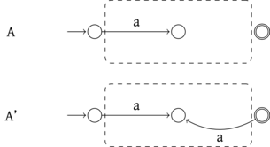
On montre facilement que \(A'\)
reconnait \(L^*\).
Soient \(L_1, L_2\) des langages
locaux sur des alphabets disjoints \(\Sigma_1\) et \(\Sigma_2\) les langages \(L_1 \cup L_2\) et \(L_1 L_2\) sont locaux sur l’alphabet \(\Sigma = \Sigma_1 \cup \Sigma_2\).
Preuve
On va juste donner les constructions
correspondantes d’automates locaux.
Soient \(A_1 = (Q_1, \Sigma_1, \delta_1,
i_1, F_1)\) et \(A_2 = (Q_2, \Sigma_2,
\delta_2, i_2, F_2)\) des automates standards locaux
reconnaissant respectivement \(L_1\) et
\(L_2\), avec \(Q_1 \cap Q_2 = \emptyset\).
On pose \[
A_u = ((Q_1 \cup Q_2 \cup \{ i \}) \backslash \{ i_1, i_2\},
\Sigma, \delta_u, i, F_u)
\] avec \[
F_u = \begin{cases} F_1 \cup F_2 & \text{si } i_1 \not\int F_1
\wedge
i_2 \not\in F_2 \\
(F_1 \cup F_2 \cup \{ i \}) \backslash \{ i_1, i_2\} & \text{
sinon }
\end{cases}
\] \[
\forall q \in Q_1 \backslash \{ i_1 \}, \forall a \in \Sigma_1,
\delta_u(q,a) = \delta_1(q,a) \text{ si défini}
\] \[
\forall q \in Q_2 \backslash \{ i_2 \}, \forall a \in \Sigma_2,
\delta_u(q,a) = \delta_2(q,a) \text{ si défini}
\] \[
\forall a \in \Sigma_1, \delta_u(i, a) = \delta_1(i_1,a) \text{ si
défini}
\] \[
\forall a \in \Sigma_2, \delta_u(i, a) = \delta_2(i_1,a) \text{ si
défini}
\]
Comme les automates \(A_1\) et \(A_2\) sont standards, on n’a pas perdu de
transitions ici. On vérifie facilement que \(A_u\) est local et standard et qu’il
reconnait \(L_1 \cup L_2\).
De même, on pose \[
A_p = ((Q_1 \cup Q_2) \backslash \{ i_2 \},
\Sigma, \delta_p, i_1, F_p)
\] où \[
F_p =\begin{cases}
F_2 & \text{si } i_2 \not\in F_2 \\
F_1 \cup (F_2 \backslash \{ i_2 \}) & \text{sinon}
\end{cases}
\] \[
\forall q \in Q_1, \forall a \in \Sigma_1,
\delta_p(q,a) = \delta_1(q,a) \text{ si défini}
\] \[
\forall q \in Q_2 \backslash \{ i_2 \}, \forall a \in \Sigma_2,
\delta_p(q,a) = \delta_2(q,a) \text{ si défini}
\] \[
\forall q \in F_1, \forall q' \in Q_2, \forall a \in \Sigma_2,
\delta_2(i_2,a) = q' \Rightarrow \delta_p(q,a) = q'
\] Par construction \(A_p\) est
local et standard, on montre qu’il reconnait \(L_1 L_2\).
Expressions régulières
linéaires
Une
expression régulière est dite linéaire si chaque lettre de \(\Sigma\) y apparait au plus une fois.
L’expression régulière \(a(b|c)^*\)
est linéaire mais \(a(a|b)^*\) ne l’est
pas.
On déduit des deux théorèmes précédents le théorème suivant :
Soit \(e\) une expression régulière
linéaire, \(\mathop{lang}(e)\) est un
langage local.
Preuve
Par induction sur l’expression
régulière.
- Cas de base : Si \(e = \emptyset,
\epsilon\) ou \(a\) avec \(a \in \Sigma\), c’est direct.
- Pour \(e^*, e | e'\) ou \(e e'\), l’hypothèse d’induction et les
théorèmes précédents permettent de conclure. On remarque juste que la
disjonction des alphabets est naturellement induite par la linéarité :
une même lettre ne peut pas être présente dans \(e\) et dans \(e'\).
La réciproque est fausse, il existe des langages locaux qui ne sont
pas dénotés par des expressions linéaires. Par exemple \((ab)^* a\) est local avec \(P = \{ a \}, S = \{ a \}\) et \(N = \{ aa, bb \}\), mais une expression
régulière le dénotant devra forcément contenir au moins deux a.
Pour toute expression régulière linéaire \(e\), il existe un automate local
déterministe \(A\) tel que \(\mathop{lang}(e) = \mathop{lang}(L)\).
Pour déterminer cet automate, on a vu une preuve explicite en
déterminant les ensembles \(P,S\) et
\(N\) pour \(\mathop{lang}(e)\). Pour calculer ces
ensembles pour une expression régulière, on peut le faire par
induction.
Tout d’abord, comme on a besoin de savoir si l’expression reconnait
le mot vide, on peut définir la propriété \(accv(e)\) : \[
accv(\emptyset) = \perp\quad \forall a \in \Sigma, accv(a) = \perp
\quad accv(\epsilon) =\top
\quad accv(e^*) = \top
\] \[
accv(e_1|e_2) = accv(e_1) \vee accv(e_2)
\quad accv(e_1 e_2) = accv(e_1) \wedge accv(e_2)
\]
On définit ensuite \(P,S\) et \(N\) directement :
\[
P(\emptyset) = \emptyset \quad \forall a \in \Sigma, P(a) = \{a\}
\quad P(\epsilon) =\emptyset
\quad P(e^*) = P(e)
\] \[
P(e_1|e_2) = P(e_1) \cup P(e_2)
\quad P(e_1 e_2) = \begin{cases} P(e_1) \cup P(e_2) & \text{si }
accv(e_1) \\
P(e_1) & \text{sinon} \end{cases}
\]
\[
S(\emptyset) = \emptyset \quad \forall a \in \Sigma, S(a) = \{a\}
\quad S(\epsilon) =\emptyset
\quad S(e^*) = S(e)
\] \[
S(e_1|e_2) = S(e_1) \cup S(e_2)
\quad S(e_1 e_2) = \begin{cases} S(e_1) \cup S(e_2) & \text{si }
accv(e_2) \\
S(e_2) & \text{sinon} \end{cases}
\]
\[
N(\emptyset) = N(\epsilon) = \Sigma^2 \quad
\forall a\in \Sigma, N(a) = \Sigma^2 \quad
N(e^*) = N(e) \backslash S(e)P(e)
\] \[
N(e_1|e_2) = N(e_1) \cap N(e_2)
\quad
N(e_1 e_2) = (N(e_1) \cap N(e_2)) \backslash S(e_1) P(e_2)
\]
Application aux expressions
régulières
Étant donné une expression régulière \(e\), on peut en déduire une expression
régulière linéaire en indiçant les occurrences de chaque lettre. Par
exemple, \((ab)^* aba\) deviendra \((a_1 b_1)^* a_2 b_2 a_3\).
On peut alors en déduire un automate déterministe local par la
méthode précédente. En oubliant les indices sur les transitions
de cet automate, on en deduit un automate non déterministe
reconnaissant le même langage que l’expression régulière initiale.
C’est l’algorithme de Berry-Sethi.
On va considérer l’expression régulière \(e
= (a|b)^* b (a|b)\).
On commence par la linéarisation \(e' =
(a_1|b_1)^* b_2 (a_2|b_3)\).
On calcule les ensembles \(P, S\) et
\(N\) :
\[
P( (a_1 | b_1)^* b_2 (a_2|b_3) ) = \{a_1, b_1, b_2 \}
\] \[
S( (a_1 | b_1)^* b_2 (a_2|b_3) ) = \{a_2, b_3 \}
\] Pour \(N\), il est plus
rapide de donner son complémentaire : \[
\Sigma^2 \backslash N((a_1 | b_1)^* b_2 (a_2|b_3) ) = \{
a_1 b_2, b_1 b_2, a_1 a_1, b_1 b_1, a_1 b_1, b_1 a_1, b_2 a_2, b_2 b_3
\}
\]
On en déduit l’automate local :
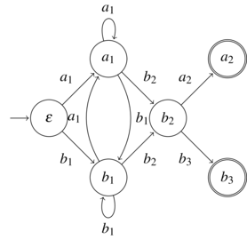
En oubliant les indices, on obtient l’automate :
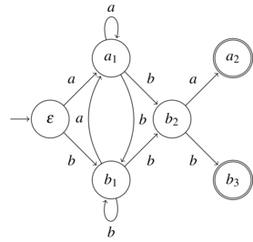
Conséquences du théorème de
Kleene
Stabilité des langages
réguliers
Par union finie
Soient \(L_1, \dots, L_n\) des
langages réguliers sur \(\Sigma\). Le
langage \(L_1 \cup \dots \cup L_n\) est
régulier.
Preuve
Du théorème de Kleene on déduit des
expressions régulières \(e_1, \dots,
e_n\) dénotant respectivement \(L_1,
\dots, L_n\). Le langage dénoté par \(e_1 |\dots | e_n\) est \(L_1 \cup \dots \cup L_n\) et par le
théorème de Kleene, il est régulier.
Par complémentaire
Soit \(A = (Q, \Sigma, \delta, q_i,
F)\) un automate déterministe complet,
l’automate \(A' = (Q, \Sigma, \delta, q_i,
Q \backslash F)\) reconnait \(\Sigma^*
\backslash \mathop{lang}(A)\).
Les langages réguliers sont stables par complémentaires. Si \(L\) est régulier sur \(\Sigma^*\) alors \(\Sigma^* \backslash L\) est régulier.
Preuve
Comme \(L\) est régulier il est reconnaissable par
un automate déterministe qu’on rend complet en rajoutant un état puits.
En appliquant le lemme et le théorème de Kleene, on en déduit que \(\Sigma^* \backslash L\) est régulier.
Par intersection finie
Soient \(L_1, \dots, L_n\) des
langages réguliers sur \(\Sigma\). Le
langage \(L_1 \cap \dots \cap L_n\) est
régulier.
Preuve
On passe d’une intersection à une
union par complémentaire. Il s’agit donc d’une conséquence directe des
deux théorèmes précédents.
Lemme de l’étoile
Lemme de l’étoile Soit \(L\) un langage régulier sur \(\Sigma\). Il existe une constante \(n \in \N^*\) telle que pour tout \(w \in L\), si \(|w|\ge n\) alors il existe \(x,y,z \in \Sigma^*\) tels que \(w = xyz\) et
- \(y \neq \epsilon\)
- \(|xy| \le n\)
- \(x y^* z \subset L\)
Cela signifie que pour tout mot suffisamment long, on peut identifier
un facteur non vide qui peut être répétée autant qu’on le souhaite.
Preuve
Soit
\(A=
(Q, \Sigma, \delta, q_0, F)\) un automate déterministe
reconnaissant
\(L\). On pose
\(n = |Q|\).
Soit \(w \in L\) tel que \(|w| \ge n\). Comme \(w\) est reconnu, il existe un chemin \(q_0 \rightarrow q_1 \rightarrow \dots \rightarrow
q_m \in F\) d’étiquette \(w\).
Comme \(m \ge n \ge |Q|\) il y a
nécessairement une répétition dans les \(n\) premiers états : il existe \(0 \le i < j \le n\) tels que \(q_i = q_j\). On pose alors \(x\) l’étiquette de \(q_0 \leadsto q_i\), \(y\) l’étiquette de \(q_i \leadsto q_j\) et \(z\) celle de \(q_j \leadsto q_m\).
On a \(w = xyz\), \(|y| = j-i > 0\) donc \(y \neq \epsilon\) et \(|xy| = j \le n\).
Comme \(q_i = q_j\), le chemin
correspondant à \(y\) est une boucle,
on peut donc l’emprunter autant qu’on le souhaite et ainsi tous les mots
de la forme \(x y^k z\) sont reconnus
par \(A\).
Ce lemme est très utile par sa contraposée qui permet d’affirmer que
si un langage ne vérifie par cette propriété, alors il n’est pas
régulier :
Soit \(L\) un langage sur \(\Sigma\). Si pour tout
\(n \in \N\), il existe \(w \in L\) tel que \(|w| \ge n\) et que pour tout \(x, y, z \in \Sigma^*\) tels que \(w = x y z\), \(y
\neq \epsilon\) et \(|xy| \le
n\) il existe \(k \in \N\) avec
\(x y^k z \not\in L\),
alors \(L\) n’est pas
régulier.
Le langage \(L = \enscomp{a^n b^n}{n \in
\N}\) n’est pas régulier.
Soit \(n \in \N\), on considère
\(w = a^n b^n \in L\). Soient \(x,y,z\) tels que \(w = x y z\) avec \(y \neq \epsilon\) et \(|xy| \le n\), on a donc \(xy\) préfixe de \(a^n\) : \(x =
a^k\) et \(y = a^l\) avec \(k+l \le n\) et \(l > 0\) et ainsi \(z = a^{n-k-l} b^n\).
Le mot \(x z = a^k a^{n-k-l} b^n = a^{n-l}
b^n \not\in L\) car \(n - l <
n\).
Ainsi, selon le lemme de l’étoile, \(L\) n’est pas régulier.
Cet exemple est très important car c’est un cas particulier très
simple des expressions bien parenthésées. On sait qu’on peut les
reconnaitre avec une pile, et on vient de voir que c’est impossible de
le faire avec un automate fini.
Attention, le lemme de l’étoile n’est pas une équivalence. Un langage
peut très bien le satisfaire et être non régulier comme on va le voir
dans l’exemple suivant.
On considère le langage \[
L = \enscomp{a b^n c^n}{n \in \N}
\cup \enscomp{a^k w}{k \neq 1, w \in \{b,c\}^*} = L_1 \cup L_2
\]
On a \(L \cap a b \Sigma^* = \enscomp{a b^n
c^n}{n \in \N^*}\) : qui n’est pas régulier, c’est à la lettre a
en préfixe près le même exemple que le précédent. Or, \(a b \Sigma^*\) est régulier donc
nécessairement \(L\) n’est pas régulier
par clôture des langages réguliers par intersection.
On va montrer que \(L\) vérifie le
lemme de l’étoile pour \(n = 2\).
Soit \(w \in L\) tel que \(|w| \ge 2\). On a quatre cas possibles pour
\(w\) :
- \(w = a b^n c^n\) pour \(n \in \N^*\), on peut alors poser \(x = \epsilon\), \(y = a\) et \(z =
b^n c^n\). On a pour \(k \in
\N\), \(xy^k z= a^k b^n c^n\)
qui est soit dans \(L_1\) si \(k =1\) ou dans \(L_2\) sinon.
- \(w = a^k v\) avec \(k \ge 2\), \(k\neq 3\) et \(v\in \{b,c\}^*\). On pose \(x = \epsilon\), \(y = aa\) et \(z =
a^{k-2} v\). On a \(x y^l z = a^{2l}
a^{k-2} v\). Si \(l = 0\), alors
\(x y^0 z = a^{k-2} v \in L\) car \(k-2 \neq 1\). Si \(l > 0\), alors \(2l +k - 2 \ge 2l \ge 2\) donc \(x y^l z \in L\).
- \(w = a^3 v\) avec \(v \in \{b,c\}^*\). On pose \(x =\epsilon, y = a\) et \(z = a^2 v\). Ainsi \(x y^l z = a^{l + 2} v \in L\) car \(l + 2 \ge 2\).
- \(w \in \{b,c\}^*\), si, par
exemple, \(w = b v\) on peut poser
\(x = \epsilon\), \(y = b\) et \(z =
v\). On a alors \(x y^k z = b^k v \in
\{b, c\}^* \subset L\).
Ainsi, on a bien prouvé que \(L\)
satisfaisait le lemme de l’étoile.


 Marc de Falco
Marc de Falco